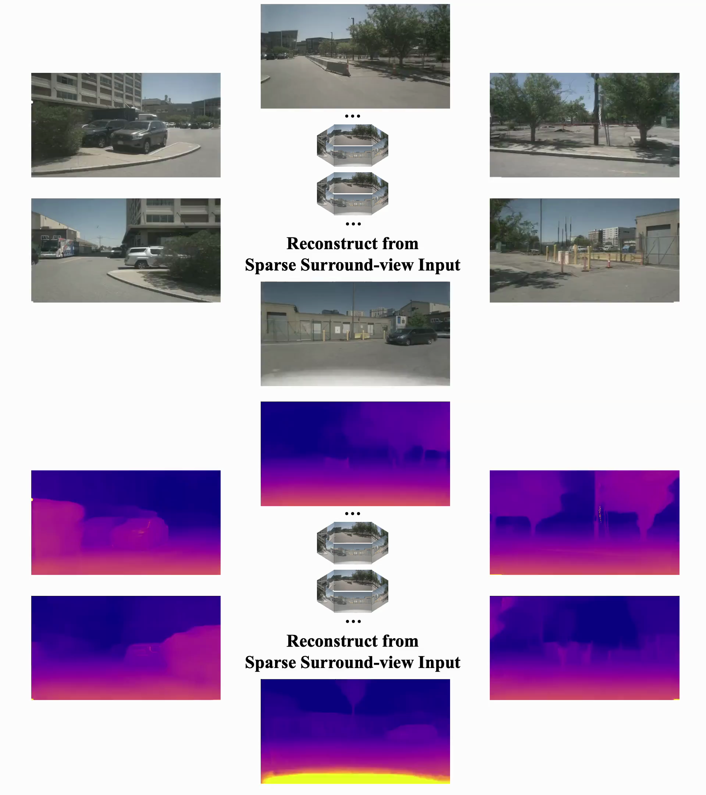
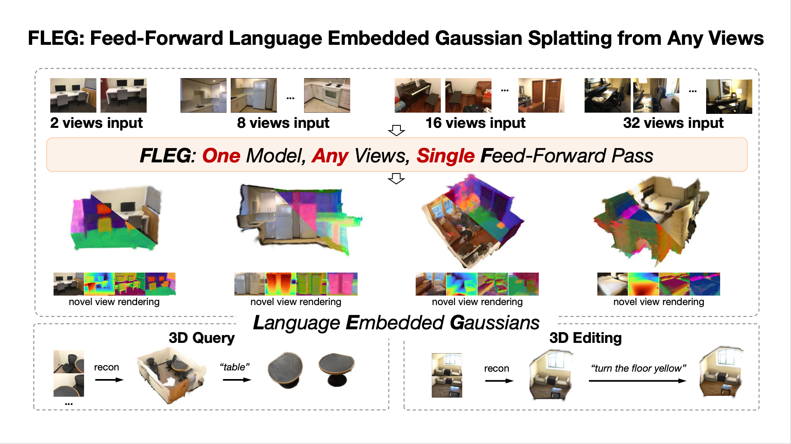
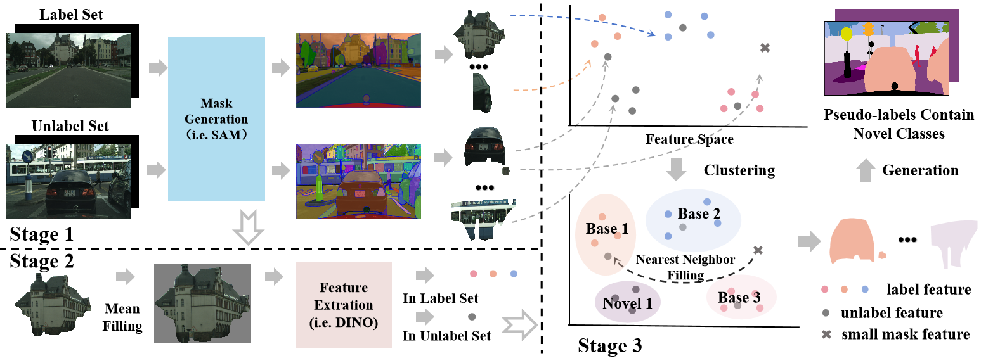

|
Qijian Tian I'm a third-year Ph.D. student in Computer Science at Shanghai Jiao Tong University (SJTU), advised by Prof. Lizhuang Ma in Digital Media & Computer Vision Laboratory (DMCV). I also receive supervision from Dr. Xin Tan, who is based at East China Normal University (ECNU). Prior to starting my PhD, I received my Bachelor's degree in Computer Science from Beihang University (BUAA). I also worked as an intern at Baidu. |

|
Research
My research interests involve computer vision and deep learning. |
|

|
DrivingForward: Feed-forward 3D Gaussian Splatting for Driving Scene Reconstruction from Flexible Surround-view Input
Qijian Tian, Xin Tan, Yuan Xie, Lizhuang Ma AAAI, 2025 project page / arXiv A feed-forward Gaussian Splatting model that reconstructs driving scenes from flexible sparse surround-view input. |
|

|
FLEG: Feed-Forward Language Embedded Gaussian Splatting from Any Views
Qijian Tian, Xin Tan, Jiayu Ying, Xuhong Wang, Yuan Xie, Lizhuang Ma, arXiv, 2025 project page / arXiv A feed-forward network that effectively reconstructs language-embedded 3D Gaussians in a single feed-forward pass from uncalibrated and unposed images, supporting both sparse and dense views. |

|
DANIM: Domain Adaptation Network with Intermediate Domain Masking for Night-time Scene Parsing
Qijian Tian, Sen Wang, Ran Yi, Zufeng Zhang, Bin Sheng, Xin Tan, Lizhuang Ma Pattern Recognition, 2025 A novel domain adaptation network for night-time scene parsing that bridges the day-night domain gap using an intermediate domain. |
|

|
Generalized Category Discovery in Semantic Segmentation
Zhengyuan Peng*, Qijian Tian*, JianQing Xu, Yizhang Jin, Xuequan Lu, Xin Tan, Yuan Xie, Lizhuang Ma arXiv, 2023 arXiv A novel setting called Generalized Category Discovery in Semantic Segmentation (GCDSS). Given prior knowledge from a labeled set of base classes, our method aims to segment unlabeled images that contain pixels of the base class or novel class. |
|
This homepage's source code is from Jon Barron's website. |